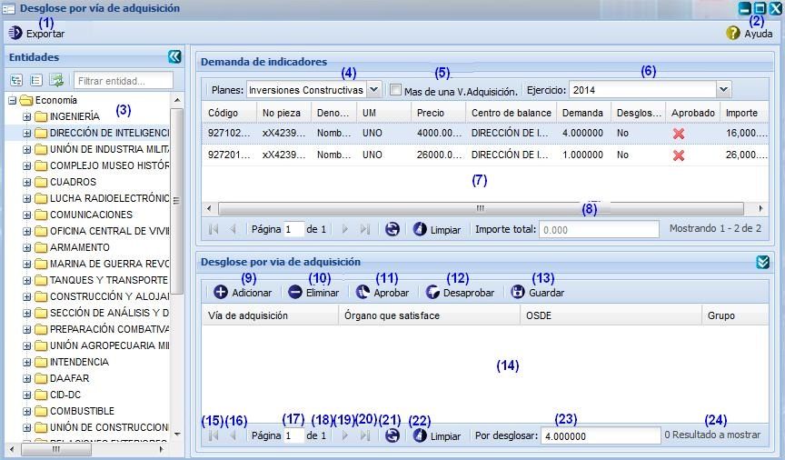

--Desglose por vía de adquisición--
Para llegar a esta funcionalidad se puede acceder a través de la opción Inicio\Planificación material\Balance material\Desglose por vía de adquisición. Una vez accedida a esta funcionalidad el sistema le mostrará la siguiente interfaz:

Figura 1. Interfaz y acciones de la funcionalidad Desglose por vía de adquisición.
Las diferentes opciones que conforman la anterior permiten:
- Exportar, esta opción permite exportar los desgloses realizados.
- Mostrar la ayuda. Se puede acceder a esta funcionalidad presionando las teclas
- Lista de entidades.
- Seleccionar los planes.
- Ver las demandas que tienen más de una vía de adquisición.
- Seleccionar el ejercicio de planificación.
- Listar las demandas de indicadores.
- Muestra el importe total de la demanda de indicadores.
- Adicionar desglose por vía de adquisición. El sistema adicionará una fila permitiendo adicionar los campos del panel desglose por vía de adquisición.
- Eliminar desglose por vía de adquisición. El sistema mostrará un mensaje de confirmación que puede Aceptar o Cancelar según desee, si presiona el botón Aceptar el sistema mostrará un mensaje de información notificando que se eliminó satisfactoriamente el desglose, si presiona el botón Cancelar el sistema cancela la acción.
- Aprobar el desglose por vía de adquisición. El sistema mostrará un mensaje de confirmación que puede Aceptar o Cancelar según desee, si presiona el botón Aceptar el sistema mostrará un mensaje de información notificando que se aprobó satisfactoriamente el desglose, si presiona el botón Cancelar el sistema cancela la acción.
- Desaprobar el desglose por vía de adquisición. El sistema mostrará un mensaje de confirmación que puede Aceptar o Cancelar según desee, si presiona el botón Aceptar el sistema mostrará un mensaje de información notificando que se desaprobó satisfactoriamente el desglose, si presiona el botón Cancelar el sistema cancela la acción.
- Guardar los datos que se adicionaron en la opción (9) de la figura 1.
- Mostrar el listado de desglose por vía de adquisición que existe en el sistema.
- Ir a la primera página, mostrando las primeras existencias.
- Ir a la página anterior.
- Muestra el número de la página donde se encuentra, se puede introducir el número.
- Muestra el número máximo de páginas.
- Ir a la siguiente página.
- Ir a la última página.
- Actualizar el listado de existencias.
- Limpiar filtro(s). Esta acción limpiará todos los criterios de búsqueda, deshabilitando los filtros realizados. Se puede realizar esta operación seleccionando la combinación de teclas (Alt + L).
- Muestra la cantidad de la demanda que no ha sido desglosada por una vía de adquisición.
- Mostrar la cantidad de resultados encontrados.